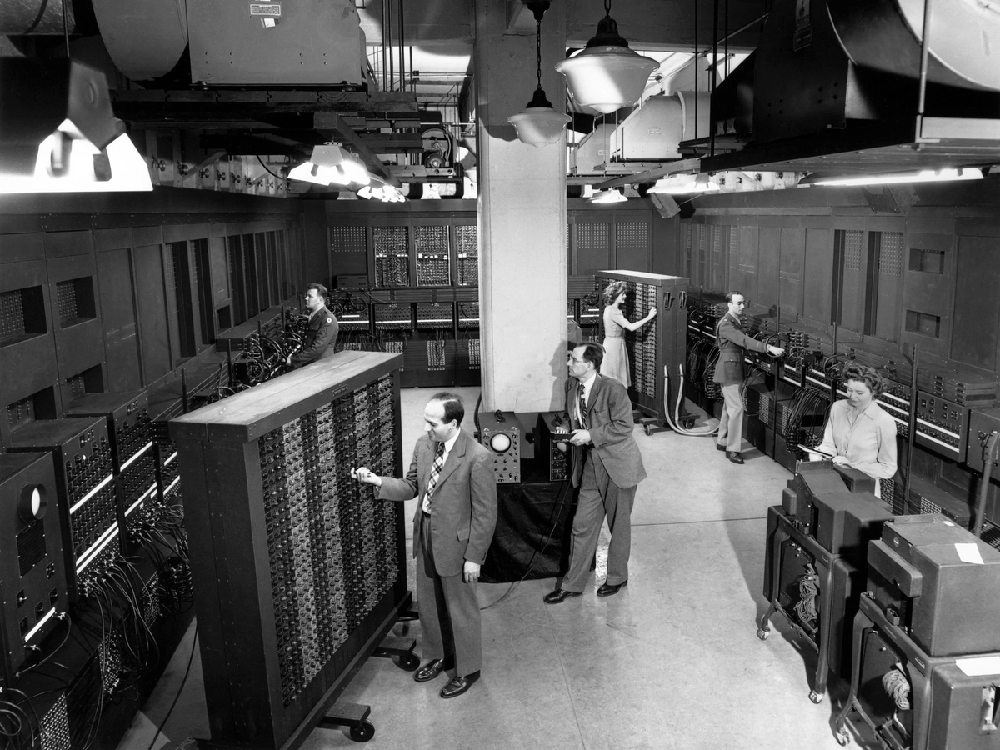
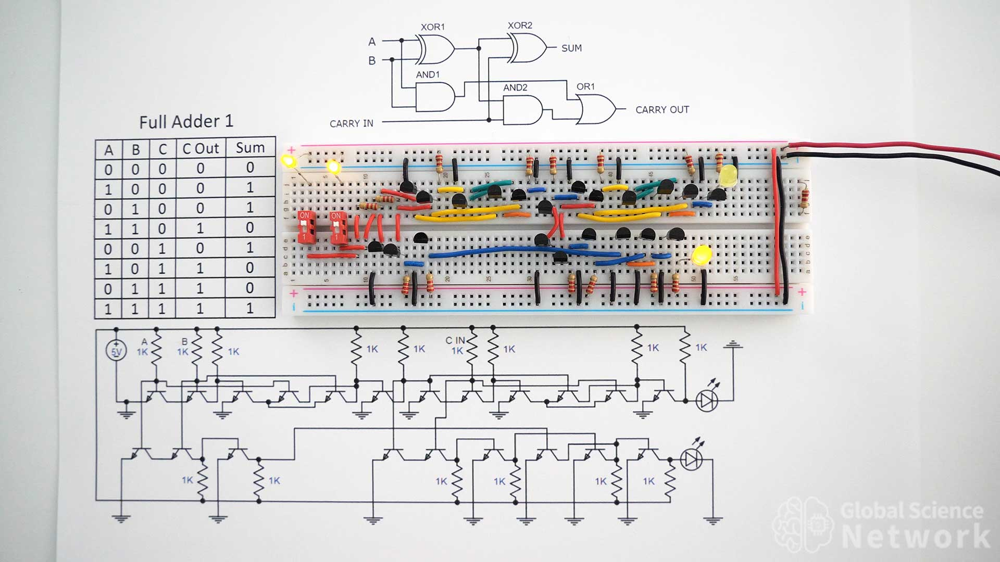

In the print dialog: choose Save as PDF, Layout Landscape, and turn on Background graphics.
Five chapters, five questions
0.0 · Why This Course? 🎯
What is this subject — and why does YOUR branch need it?
0.1 · The Problem & The Dream 💡
Why did humanity need a computing machine at all?
0.2 · Bits & Boolean Logic 🔀
How can metal and electricity do mathematics?
0.3 · The First Machines 🏗️
Relays, tubes, ENIAC — and the idea that changed everything.
0.4 · The Transistor Revolution ⚡
A better switch, four generations, and Moore's law.
0.0
Why This Course?
"Whatever your branch — AI, Data Science, Cyber, IoT, ECE — every line of code you will ever write runs on THIS."
This is not "somebody else's subject"
AI / ML / Data Science 🤖
Training a model is feeding a GPU. Batch size, memory bandwidth, cache misses — these decide whether training takes 3 hours or 3 days. The best ML engineers think in hardware.
Cyber Security 🔐
Attacks live in architecture: buffer overflows abuse how memory is organized; Spectre & Meltdown broke the world's CPUs through cache tricks. You cannot defend what you don't understand.
IoT / ECE 📡
You'll program microcontrollers where every byte and every milliwatt counts. Registers, memory maps and interrupts are your daily tools — all taught here.
Every branch 🎓
GATE, placement interviews, and every performance bug you will ever chase. Engineers who understand the machine beneath their code are rare — and valued like it.
Course outcomes · what you can DO after 45 hours
Five units, five abilities
CO1 · Unit 1: explain the structure and operation of a digital computer — every box, every wire.
CO2 · Unit 2: design how a processor and its memory actually execute an instruction.
CO3 · Unit 3: use pipelining to make execution fast — and handle its hazards.
CO4 · Unit 4: analyse the memory hierarchy — cache to virtual memory — for speed and capacity.
CO5 · Unit 5: connect the computer to the world — interrupts, DMA, and standard I/O interfaces.
Programme outcomes · where this course fits your degree
What your degree promises — this course delivers
PO1 · Engineering knowledge
The deepest layer of computing knowledge — the machine itself. Everything above it (OS, compilers, AI frameworks) stands on this floor.
PO2 · Problem analysis
Why is this program slow? Why does this exploit work? Why does this sensor node drain its battery? The answers live at this level.
PO3 · Design of solutions
Choosing processors, sizing memory, designing embedded systems — engineering decisions this course equips you to make.
The name of the course, decoded
Architecture vs Organization
ARCHITECTURE — the blueprint
ORGANIZATION — the wiring
What it is
The computer as the programmer sees it
How the hardware actually implements it
Like a house's…
floor plan — where rooms and sockets are
internal wiring and plumbing behind the walls
Made of
instruction set (ISA), data formats, addressing
circuits, control signals, technology (CMOS)
How the programmer "sees" instructions — an example. The same addition, at three levels:
total = a + b; (C) →
Add R4, R2, R3 (assembly) →
0011 0100 0010 0011 (machine code).
Why does this course speak assembly? Assembly is the machine's own instruction set in human-readable form — one line = one machine instruction, nothing hidden. It is the closest language to the processor; below it there are only voltages.
🙋
A program written for a 1970s processor can run on a modern chip a billion times faster — unchanged. What changed, and what didn't?
The organization changed (VLSI: billions of transistors, caches, pipelines). The architecture — the instruction set, the blueprint — survived. Same WHAT, radically better HOW.
One design, every size
Embedded 🚗
Hidden inside cars, washing machines, ACs — monitoring and controlling a physical process. You never see them.
Personal 💻
Desktops, workstations, laptops — general work for one person.
Servers & Enterprise 🏦
Shared by many users over a network — databases, banking, IRCTC.
Supercomputers & Grid 🌦️
Weather forecasting, scientific simulation. Grids coordinate many PCs into one giant resource.
From the chip in a washing machine to a supercomputer: the same functional structure inside — wait for Unit 1.
🔑 Key insight
Architecture = what the machine can do. Organization = how it does it. This course teaches you both — the floor every other subject stands on.
0.1
The Problem & The Dream
"Ships sank, banks lost millions, boilers burst — all because of typos in books of numbers."
300 years before electronics
Computing began with gears
From the 1600s on, mechanical devices — gears, levers, pulleys — performed basic arithmetic. Pascal and Leibniz built calculating machines by hand.
Punched cards controlled sequences of operations — in looms, then in calculators: the earliest form of "programming".
But gears could only go so far: add, subtract, multiply. Polynomial equations? Astronomical positions? Navigation, weather, banking? Far too complex for the machines of the day.
So how did the world do complex calculations? You looked the answer up — in a printed table…
Books of pre-computed numbers — logarithms, sines, astronomical positions, interest tables — sat on every navigator's, banker's and engineer's desk.
Every number in them was computed by hand by people employed as "computers" — a job title, not a machine — then copied by hand, then typeset by hand. Three chances for error.
And the errors were deadly: 🚢 a navigation typo put ships miles off course · 💰 faulty interest tables cost millions · 🌉 bridges and boilers built on bad numbers failed.
One page of a log-table book — every digit computed by hand
Human computers at work, 1914
1821 · The steam epiphany
"I wish to God these calculations had been executed by steam!"
Charles Babbage and astronomer John Herschel, checking tables by hand, finding error after error — until Babbage explodes with the words above.
His answer: the Difference Engine — a machine that never tires, never skips a digit…
…and prints its results directly into metal printing plates — removing the human typesetter too. Automate the whole pipeline, not just the arithmetic.
We need a machine that never gets tired and never slips.
Babbage's dream, 1821. It took over a century to come true.
Six dreamers saw it coming
CB
Charles Babbage · 1837
Dreams past the Difference Engine: the Analytical Engine — a Store + a Mill, driven by punched cards. Never finished, but the shape of every computer since.
AL
Ada Lovelace · 1843
First algorithm — and the deeper insight: a rule-following machine can manipulate any symbols, not just numbers.
GB
George Boole · 1854
AND, OR, NOT become mathematics — 90 years before anyone builds them.
AT
Alan Turing · 1936
One universal machine, given different rules, computes anything computable. One machine, different instructions.
CS
Claude Shannon · 1937
Boolean logic maps exactly onto electrical switches. Theory meets hardware.
JvN
John von Neumann · 1945
Keep the instructions in memory, beside the data. New program = new numbers. No rewiring.
The timeline — ready, but unbuilt
1821The steam epiphany — Babbage vows to mechanise the error-riddled tables.
1837Analytical Engine designed — general, mechanical, never completed.
1843Ada writes the first algorithm — machines can manipulate any symbols.
1854Boole's algebra of logic — AND, OR, NOT as mathematics.
1936Turing's universal machine — one machine computes anything computable.
Pause and notice: by 1937 the logic existed (Boole), the blueprint existed (Turing), the bridge to hardware existed (Shannon). Yet nobody built the machine. Big machines need big money — and money comes only with urgent need. What need? Turn the page…
A century later · World War II
The tables come back — deadlier
Same disease, new symptom: every new cannon needs a firing table — the correct angle for every range, wind and shell.
Each entry takes ~50 hand calculations; rooms full of human computers cannot keep up with the war.
And so, at last, the missing ingredient arrives: an urgent need — and the funding that follows it. This crisis pays for ENIAC.
🔑 Key insight
For 128 years the problem never changed: humans + arithmetic = errors. Neither did the dream: one general machine — you change the instructions, not the machine.
0.2
Bits & Boolean Logic
"How can metal and electricity do mathematics?"
A switch is a bit — flip them
Real switches: knob down = OFF = 0, knob up = ON = 1. Each carries a weight: 8 · 4 · 2 · 1.
OFF
0
weight 8
OFF
0
weight 4
OFF
0
weight 2
OFF
0
weight 1
0000 = 0
Any pattern of ONs and OFFs is a number. Metal is counting. 4 bits → 16 patterns; n bits → 2ⁿ.
🙋
Four switches read 1011. What number is that?
Weights: 8 · 4 · 2 · 1
1011 = 8 + 0 + 2 + 1 = 11 — each 1 adds its column's weight.
Mano Ch.1 · Hamacher App.A — why binary is RELIABLE
Inside the chip, a bit is a voltage
Logic 0 = switch turned OFF — low voltage, near 0 V (ground).
Logic 1 = switch turned ON — high voltage, typically +5 V or +3 V.
Between them, a forbidden range: random electrical noise can wiggle a voltage, but it can't push it across the whole gap. That's why two states beat ten — reliability.
Shannon's bridge · 1937 — wiring IS logic
Click the switches, watch the current
Current ⚡ is always arriving from the source (left). Whether it reaches the bulb depends on the wiring.
SERIES = AND(both must close)
PARALLEL = OR(either path works)
A normally-closed switch gives NOT. Boole's 1854 algebra, built from copper and springs — logic became hardware.
The four gates — symbols, tables, live
0
input A
0
input B
AND
A
B
out
0
0
0
0
1
0
1
0
0
1
1
1
OR
A
B
out
0
0
0
0
1
1
1
0
1
1
1
1
XOR
A
B
out
0
0
0
0
1
1
1
0
1
1
1
0
NOT A
A
out
0
1
1
0
Truth tables, symbols, behaviour — you now have the complete toolkit. But how do these gates CALCULATE? That is the next slide.
🙋
XOR gate, both inputs 1. What comes out?
0 — XOR is 1 only when the inputs differ. Hold that thought: binary 1 + 1 = 10, whose sum bit is 0…
The crux of the machine — gates that CALCULATE
The half adder — click A and B
0
A
0
B
0 + 0 = 00
Both gates read the same two inputs, A and B.
Sum = A ⊕ B (the XOR) Carry = A · B (the AND)
Exactly the two binary-addition columns.
This is the very crux: arithmetic from logic gates, gates from switches. Drive it deep — everything in this course is built on this moment.
One step up — the carry joins the addition
The full adder — click A, B and Carry-in
0
A
0
B
0
Cin
0+0+0 = 00
Two half adders + an OR.
Sum = A ⊕ B ⊕ Cin Cout = C1 OR C2
Chain the carry: 32 full adders in a row = the adder inside your laptop's ALU. From two switches to real arithmetic — same gates all the way.
🔑 Key insight
Numbers → bits → voltages → gates → arithmetic. Metal and electricity can add. Everything else is scale.
0.3
The First Machines
"The money has arrived. Now — what do we build the switch from?"
Attempt 1 · the mechanical way
The relay — an electromagnet moves a metal arm
Send a small current through a coil → it becomes an electromagnet and pulls a metal arm (the armature) closed, switching a second, larger circuit. Electricity controlling a switch — a logic gate can be built from it.
It really was built. Zuse's Z3 (Germany, 1941) — 2,000 relays, the first programmable digital computer. Harvard Mark I (USA, 1944) — 3,500 relays, clunking away for the US Navy.
The theory came first: Claude Shannon (1937) showed a network of relays is Boolean algebra — switches ↔ AND/OR/NOT. The blueprint for every logic circuit since.
But a relay is a moving part: only ~1 kHz, audibly clicking (you could hear the computer think), and it wears out. The first computer 'bug' was a real moth crushed in a Mark II relay.
Logic works — but it can never scale. We need a switch with no moving parts.
A relay — the coil (electromagnet) and contact legs visible through the clear casing
Attempt 2 · switch the electrons themselves
The vacuum tube — a grid steers electrons
A glass bulb with the air pumped out. A heated wire (the cathode) boils off electrons — thermionic emission — that stream toward a positive plate (the anode). Lee de Forest added a third element in 1906: the triode.
A metal grid sits in the electron path and decides: grid POSITIVE → electrons flow → ON (1); grid negative → blocked → OFF (0). A voltage controlling a current — with no moving parts.
Switching at ~1 MHz — about a thousand times faster than the clicking relay, because nothing moves but electrons.
But the heated filament makes it hot, power-hungry, and it burns out like a light bulb. ENIAC (1945) needed 18,000 of them, drew 150 kW, and lost roughly one tube every day.
Vacuum tubes — a range of sizes and models
1945 · the vacuum-tube giant
…and here it is: ENIAC

ENIAC, University of Pennsylvania — all four walls, floor to ceiling
Changing one of 18,000 tubes — a daily ritual
18,000 vacuum tubes
27 tonnes filling a large room
150 kW a small neighbourhood's power
~1 tube died every day
🙋
ENIAC lost roughly one vacuum tube every day. Why?
Tubes have a heated filament — hot, power-hungry, and they burn out exactly like light bulbs. 18,000 tubes = daily failures.
Watch ENIAC run
https://www.youtube.com/watch?v=HgsklKafxG8
Dying tubes were only disease number one…
The rewiring problem
ENIAC's "program" was its wiring. Today it computes firing tables; tomorrow you want weather prediction on the same machine? Days of unplugging cables and resetting switches — while the machine sits idle.
Enter John von Neumann. His 1945 report asked the question that changed everything: instructions are just information… and we already have a place that stores information.
Put the program IN the memory, beside the data — as numbers. The stored-program concept.
Reprogramming ENIAC = re-plugging cables
John von Neumann
The single most important slide of Unit 0
The program lives in memory
🙋 Look at the memory. Which numbers are the program, and which are data?
You can't tell — neither can the machine. Instructions ARE numbers: "20 05" might mean "load the value 5".
That is the whole revolution: a new program is just new numbers in memory. No rewiring. Load and run.
One machine, infinite programs — Babbage's dream, Turing's proof, von Neumann's engineering.
1949 · the stored program becomes real
EDVAC — the dream runs
EDVAC runs stored programs: load new numbers, run a new task — no rewiring, ever again. Babbage's 1821 dream, real at last — 128 years later.
But look closely: EDVAC is still built from thousands of vacuum tubes — hot, power-hungry, dying daily, filling a room.
The IDEA was perfect. The SWITCH was not. The world needed the vacuum tube replaced…
von Neumann with EDVAC
🔑 Key insight
Instructions are just numbers in memory. The stored program turned a calculator into a computer — change the numbers, change the machine's purpose.
0.4
The Transistor Revolution
"The idea was perfect. The switch was not. Bell Labs, 1947…"
1947 · Bell Labs — the turning point
The transistor — a switch with three legs
Three legs: a gate (the control) and two legs forming a path. Voltage on the gate opens or closes the path between the other two — a switch, in solid silicon.
No filament. No moving parts. No vacuum. Small, cool, reliable — Bardeen, Brattain & Shockley, Nobel Prize 1956.
Its output voltage can drive the next transistor's gate — switches building gates. Next slide.
Bardeen, Shockley & Brattain — Bell Labs
A single transistor
Hamacher App.A — watch one transistor become a gate
One transistor = a NOT gate — try it
0
input A
A = 0 → the switch is OPEN. No path to ground, so OUT stays connected to the supply — OUT = 1.
One continuous wire runs supply → resistor → OUT node → leg 2 → transistor → leg 3 → ground. The gate (leg 1) decides whether that path is broken or complete.
A
OUT
0
1
1
0
the NOT truth table
Two transistors — same idea, two wirings
NAND and NOR — drive them
0
A
0
B
NAND — in SERIES
A
B
OUT
0
0
1
0
1
1
1
0
1
1
1
0
NOR — in PARALLEL
A
B
OUT
0
0
1
0
1
0
1
0
0
1
1
0
VCC is always on (the yellow rail through the resistor). If the transistors complete a path to ground, the output is dragged to 0; if the path is broken, the output stays high at 1. Series needs both closed → NAND. Parallel needs either → NOR.
Putting it all together — the most important ladder in computing
From one switch to arithmetic
1 transistor → a NOT gate. (you just drove it)
2 transistors → NAND (series) and NOR (parallel).
A few NANDs wired together → AND, OR, XOR — in fact, NAND alone can build every gate that exists.
XOR + AND → the HALF ADDER from Chapter 0.2 (Sum, Carry) — roughly 20 transistors.
2 half adders + OR → the FULL ADDER — roughly 40 transistors.
32 full adders chained → the adder inside your laptop's ALU — about 1,300 transistors.
Billions of transistors → your phone. CMOS pairing (NMOS + PMOS) keeps power near zero at rest — that's why it doesn't melt.
The physical story — the SAME adder, shrinking
From a breadboard you can touch… to a speck between your fingers
Half adder
~20 transistors, wired by hand on a breadboard
→
Full adder

~40 transistors — more switches, more wires
→
Same adder → one IC
The whole circuit grown on silicon — fits on a fingertip
→
Many ICs = a processor
Each IC does one job — together they build a computer
→
VLSI microprocessor
Billions of transistors — a whole processor between two fingers
Same logic, same full adder — the only thing that changed is size. Breadboard → IC → VLSI. That shrink is exactly the four generations →
Hamacher Ch.1 — learn this table
Four generations of computers
Gen
Years
Technology
What it brought
1st
1945–1955
Vacuum tubes
The stored-program concept; assembly language
2nd
1955–1965
Transistors
Smaller, faster gates; high-level languages (Fortran)
3rd
1965–1975
Integrated Circuits
Many transistors per chip; pipelining & cache ideas emerge → Units 3 & 4!
4th
1975–now
VLSI
Billions of transistors → the microprocessor
Note what evolved: the organization. The architecture — the stored program — is the same dream since 1945.
1965 · Gordon Moore's observation
Moore's law — the doubling drumbeat
Transistor count per chip doubles roughly every two years.
The axis is logarithmic — a straight climb here means exponential growth.
Why it works: ICs grow switches together on silicon — no hands, no wires.
⚠ Not a law of physics — an economic target the industry chased for 60 years. It is slowing… which is why architecture matters more than ever.
Memory needed a switch too
Magnetic-core memory
Each bit = the magnetisation direction of a tiny iron ring — hand-threaded, one ring per bit. Workers literally wove Apollo's memory.
Transistor memory (DRAM / SRAM)
The same bit, shrunk to one of billions of cells on a chip. Full story in Unit 4.
Core memory: one ring, one bit
🔑 Key insight — and a cliffhanger
The logic never changed since Boole. We found a better switch — and Moore's law made it a billion times smaller, faster, cheaper.
HOW the machine actually fetches and executes those stored numbers — that is the story of Unit 1. See you there.